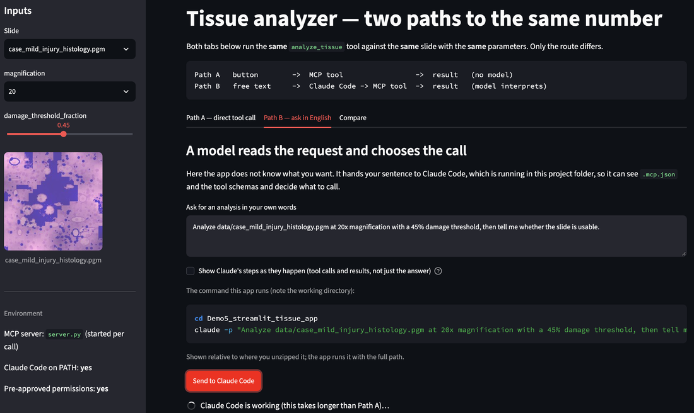

This demo assumes Demos 1–4. You need a terminal, Python 3, and Claude Code signed in to the NRT organization, and you should have run at least Demo 2 so the MCP pieces are familiar. If not, start with the setup steps and the four core demos.
Package:
Demo5_streamlit_tissue_app.zip
This is Demo 2's MCP server with a web front end on top. The app reaches the same analysis two ways, and the whole point is the difference between them:
Path A a button -> MCP tool -> result (no model)
Path B a text box -> Claude Code -> MCP tool -> result (a model interprets)
Same server, same slides, same numbers. Only the route changes — which is the same experiment Demos 1 to 4 ran, moved up one level to the interface.
1. Unzip and install
unzip Demo5_streamlit_tissue_app.zip
cd Demo5_streamlit_tissue_app
python3 -m venv .demo_venv
source .demo_venv/bin/activate
pip install -r requirements.txt
On Windows the activate line is .demo_venv\Scripts\activate.
Start it from a terminal where claude --version works. A GUI process only
inherits the environment of the shell that launched it; if claude is not on
that PATH, Path B has no way to find it.
./run.sh # or: streamlit run app.py
A browser tab opens. The sidebar tells you whether Claude Code was found.

2. Look at what is here before you click anything
ls -a
cat mcp_client.py
mcp_client.py is about seventy lines and does exactly what Claude Code does:
start server.py, send initialize, send tools/list, send tools/call. There
is no framework in between. You can import it from any Python program.
python3 mcp_client.py
analyze_tissue - Measure damaged tissue on a slide. Run this FIRST. Reads the image loc
classify_tissue - Label a slide normal / mild_injury / necrosis from analyze_tissue outp
isError: False
{
"tool": "analyze_tissue",
"slide": "data/case_mild_injury_histology.pgm",
"magnification": 20,
"damage_threshold_fraction": 0.45,
"n_tiles_tissue": 576,
"n_tiles_damaged": 127,
"damage_fraction": 0.22,
"hard_edge_rate": 0.042,
"confidence": 0.95,
"low_confidence": false,
"usable": true,
"notes": "ok"
}
That is the whole conversation, and two details in it are worth a second:
- The tool descriptions stop mid-word because the demo block at the bottom of
mcp_client.pyprints only the first 70 characters. Nothing is truncated in the tool itself. isErroris MCP's own field on the reply, not a result of the analysis. It is how a client tells "the tool ran, here is the answer" from "the tool refused, here is why" — thetruecase is what you saw in Demo 2 when the schema rejecteddamage_threshold_fraction = 50.
No Streamlit, no model, no agent. Worth seeing once: the MCP server is just a program that answers questions on stdin, and it cannot tell your seventy lines of Python from Claude Code.
Part A — The path with no model in it
3. Run the analysis from the form
In the app, leave the defaults (case_mild_injury_histology.pgm, magnification
20, threshold 0.45) and press Run analyze_tissue.
Above the button the app prints exactly what it is about to send:
{
"name": "analyze_tissue",
"arguments": {
"slide": "data/case_mild_injury_histology.pgm",
"magnification": 20,
"damage_threshold_fraction": 0.45
}
}
Expected: damage fraction 0.22, edge rate 0.042, confidence 0.95.
Nothing in that round trip involved a language model. The app already knew which tool to call and what the arguments meant, because a human — you — decided when the form was built.
4. Find out where the validation actually lives
Drag the threshold slider to 1.00. Fine. Now open app.py and change the
slider's maximum from 1.0 to 100.0:
threshold = st.sidebar.slider("damage_threshold_fraction", 0.0, 100.0, 0.45, 0.01)
Save; Streamlit reloads. Set the slider to 50 and press the button.
argument validation failed (nothing was run):
- 'damage_threshold_fraction' must be <= 1, got 50.0 (did you mean 0.5?)
The form let it through and the server did not. That is the arrangement you want: a GUI is a convenience, not a guarantee, and anything that must be true has to be checked where the work happens. Put the slider back when you are done.
5. The fold-artifact slide, in a GUI this time
Pick case_fold_artifact_histology.pgm and run it. The app shows a warning
because low_confidence is true — it has to, because the app author wrote a line
that checks that field.
Now press Then classify it.
mild_injury (probability 0.7)
Identical to the genuinely mild slide, and the classification JSON contains no edge rate, no confidence and no notes. The app flags it only because somebody remembered to look. Every display is a decision about what not to show.
Part B — The path with a model in it
6. Ask for the same thing in words
Open the Ask in English tab. The default text is something like:
Analyze data/case_fold_artifact_histology.pgm at 20x magnification with a
45% damage threshold, then tell me whether the slide is usable.
Notice 20x and 45% — neither is a valid argument. The form could not have
accepted them; a model can convert them. Press Send to Claude Code.
The app shows the command it runs:
cd /path/to/Demo5_streamlit_tissue_app
claude -p "Analyze data/..." --output-format json
Watch what it actually does
Leave "Show Claude's steps as they happen" ticked. Instead of a paragraph appearing after ten silent seconds, you get the trace as it happens:
> I'll measure the slide first, then classify it only if the measurement is usable.
1. calls mcp__tissue-analyzer__analyze_tissue
{ "slide": "data/case_fold_artifact_histology.pgm", "magnification": 20, ... }
↳ gets back { "damage_fraction": 0.234, "low_confidence": true, ... }
2. calls mcp__tissue-analyzer__classify_tissue
↳ gets back { "label": "mild_injury", "probability": 0.7 }
That comes from --output-format stream-json --verbose, which emits one JSON event
per line; stream_parse.py turns those events into the steps you see.
This panel is the point of the whole demo. The prose is what Claude says
it did. The tool calls are what it did. Ask for 20x and a 45%
threshold and you can see, in the arguments, that they became 20 and
0.45 — or see that they did not.
If your version of Claude Code does not support stream-json, the app says so and
you can untick the box to fall back to plain JSON. Either way there is a Replay a saved
trace expander that renders a recorded run of the fold-artifact slide, so you can see the
shape of a trace without spending anything.
Two details make the run work at all, and both are easy to get wrong:
cwdis the project folder. That is how Claude Code finds.mcp.json,CLAUDE.mdand the tool schemas. Start it anywhere else and it has no tools.--output-format jsonmeans your app reads fields instead of trying to regex English out of a paragraph.
7. Why it works at all — and how to break it
cat .claude/settings.json
"allow": [
"mcp__tissue-analyzer__analyze_tissue",
"mcp__tissue-analyzer__classify_tissue",
...
]
In -p mode there is nobody at the keyboard, so Claude Code cannot stop and
ask for permission. Anything not already allowed is simply not used.
Try it. Delete the two mcp__tissue-analyzer__... lines, save, and send the same
request again.
You will not get an error dialog. You will get an answer — a plausible, well-written answer that quietly did less than you asked. Put the lines back.
This is the Demo 3 lesson arriving with consequences. In an interactive session a missing permission is a prompt you notice. In an application it is a silent difference in what happened.
Part C — Put the two side by side
8. Compare
Open the Compare tab after running both paths.
Path A deterministic; same input, same output; fast; free
cannot answer a question the form has no field for
Path B handles wording the form never anticipated; can chain steps;
slower; costs tokens; may differ between runs
The two panels show the same four fields, one dug out of the direct call and one dug out of Path B's trace, so they can be read side by side:
Path A Path B
damage_fraction 0.234 damage_fraction 0.234
hard_edge_rate 0.17 hard_edge_rate 0.17
confidence 0.55 confidence 0.55
usable true usable true
When they agree the app says so. When they do not, it reads the arguments out of the trace and tells you which one differed — usually because the sidebar was left on a different slide than the sentence named.
Run Path B twice with the same sentence. The wording of the two answers moves; these four numbers do not. That is worth saying out loud: the model is varying the explanation, not the result — because the result comes from a tool with a schema, not from the model.
9. The question this demo is really asking
Every control in an interface decides who interprets the request.
a button you already decided, at design time
a text box the model decides, at run time
A model behind a button that always does the same thing adds latency, cost and variance and buys nothing. A form in front of a request nobody anticipated is a wall. Most research applications want both, and knowing which is which is the design skill.
Part D — Take it to your own work
10. Sketch your own two paths
For one analysis you actually run:
1. What are the three or four parameters a colleague would always set?
-> those are form controls
2. What request would you make that no form you would tolerate could hold?
-> that is the text box
3. What must be true of every run, no matter which path produced it?
-> that belongs in the server, as a schema or a check
Point 3 is the one people skip. It is also the only one that still protects you at 2am six months from now.
11. If you build on this
The architecture here — a GUI shelling out to claude -p — is a sound prototype
and an awkward product. It starts a fresh process per request, so there is no
conversation, no memory between clicks, and no way to stream progress.
When a project outgrows that, the next step is a programmatic agent interface rather than treating the CLI as an API. For a course project, this is the right amount of machinery: it is inspectable, it is three files, and every part of it is something you have already seen.
Appendix — the three messages, again
initialize -> who are you, what protocol
tools/list -> what can you do, with what schema
tools/call -> do this one, with these arguments
mcp_client.py sends those three. Claude Code sends those three. The server
cannot tell the difference, and does not need to.